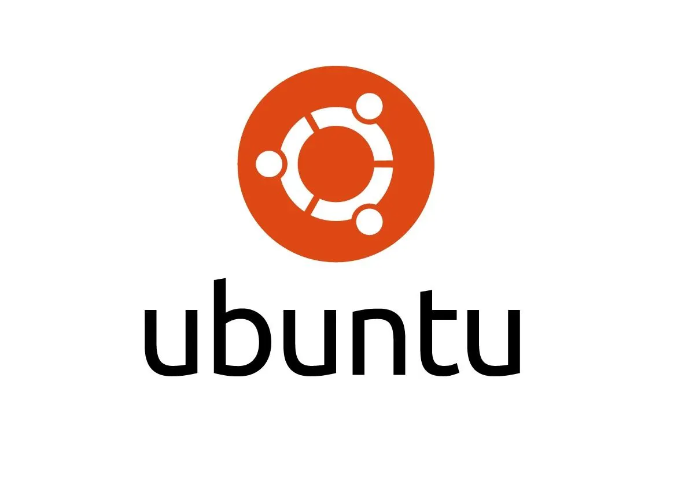

Systemy operacyjne – rodzaje
Microsoft Windows
To najbardziej rozpowszechniony na świecie system operacyjny. Pojawił się w 1985 roku, a najświeższa wersja to obecnie Windows 11. Popularność tego oprogramowania ma kilka powodów. Po pierwsze system ten jest bardzo przystępny dla użytkownika. Ma proste i intuicyjne menu, a jego zastosowanie okazuje się szerokie – począwszy od pracy biurowej, poprzez naukę, aż do obróbki graficznej i obsługi zaawansowanych gier komputerowych.
Drugi powód popularności tego systemu stanowi fakt, że na początku boomu na komputery osobiste Windowsa montowano fabrycznie w bardzo wielu urządzeniach. Użytkownicy przyzwyczaili się więc do niego, dlatego też większość osób nie wyobraża sobie dziś pracy na innym systemie. Każda kolejna odsłona była lepsza od poprzedniej, a wersje takie jak XP czy system Windows 10 uznawane są za najlepsze w całej historii firmy Microsoft.
Na kolejny powód popularności systemu Windows składają się stosunkowo niskie wymagania techniczne. Otóż każda pojawiająca się z biegiem lat wersja działała także na słabszych komputerach. Dodatkowo posiadacze jakiejkolwiek wersji zawsze mogą liczyć na bardzo długie wsparcie techniczne, utrzymujące się nawet po wypuszczeniu na rynek nowszych odsłon Windowsa.

macOS
Firma Apple od zawsze za cel stawiała sobie dostarczanie klientom produktów jak najwyższej jakości. By było to możliwe również w przypadku komputerów stacjonarnych i laptopów, marka postanowiła stworzyć własny system operacyjny. Jego historia sięga 1985 roku oraz wczesnych komputerów Apple. Od 2002 roku wszystkie komputery oznaczone nadgryzionym jabłkiem mają fabrycznie instalowany system operacyjny macOS.
Jakie są główne zalety tego oprogramowania? Jest ono zoptymalizowane do pracy z podzespołami firmy Apple. Użytkownicy chwalą je za prostotę obsługi, niezawodność i elegancki, intuicyjny w korzystaniu interfejs. Co więcej, występują w nim niespotykane nigdzie indziej rozwiązania techniczne, takie jak ekosystem Apple, czyli zgodne współdziałanie wszystkich urządzeń marki za pomocą jednego systemu operacyjnego.
MacOS doskonale nadaje się do zaawansowanych zadań i obsługi wymagających programów komputerowych. Jedną z głównych wad tego rozwiązania stanowi natomiast fakt, iż system ten da się zainstalować tylko na sprzętach firmy Apple. Dlatego jeśli chcesz pracować na macOS, musisz kupić komputer tej samej marki.

Linux - Ubuntu
Trzeci najpopularniejszy system operacyjny na świecie. Choć trzeba przyznać, że ma on pewne wady. Wyżej opisane rodzaje systemów operacyjnych, czyli Windows oraz macOS, są proste i intuicyjne w obsłudze. Stosowane mogą być przez użytkowników, którzy nie mają głębokiej wiedzy informatycznej. Ubuntu, będący wersją systemu Linux, wymaga już z kolei odrobiny wiedzy oraz umiejętności informatycznych
Jako jedyny z tego zestawienia jest całkowicie darmowy. Jego dużą zaletę stanowi bardzo łatwa dostępność. Na rynku Ubuntu istnieje od 2004 roku, a co 6 miesięcy regularnie pojawiają się jego nowe wersje. Każdy więc może sam sobie pobrać ten program i zainstalować na swoim komputerze.
Użytkownicy chwalą system Ubuntu za stabilne działanie, duże możliwości personalizacji oraz nowoczesne rozwiązania.
